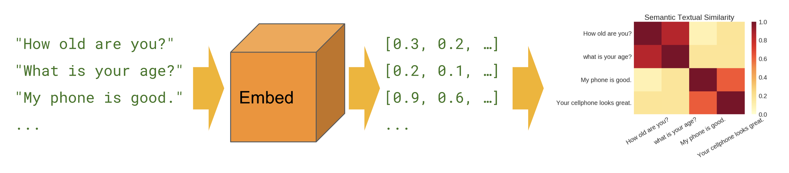

Approach
To build the search engine, we performed the data preprocessing steps same as what were done in the plagiarism checker. The search engine is build on 7395 news articles from the same dataset. We removed the unwanted data from text content and the subject columns in the dataset.

In order to build the Document search engine we used the Google Universal sentence encoder model. The Universal Sentence Encoder encodes text into high-dimensional vectors that can be used for text classification, semantic similarity, clustering and other natural language tasks. The model is trained and optimized for greater-than-word length text, such as sentences, phrases or short paragraphs. It is trained on a variety of data sources and a variety of tasks with the aim of dynamically accommodating a wide variety of natural language understanding tasks. The input is variable length English text and the output is a 512 dimensional vector. This encoder differs from word level embedding models in that it's trained on a number of natural language prediction tasks that require modeling the meaning of word sequences rather than just individual words
Semantic Similarity
Semantic similarity is a measure of the degree to which two pieces of text carry the same meaning. This is broadly useful in obtaining good coverage over the numerous ways that a thought can be expressed using language without needing to manually enumerate them.
Classification
The Universal Sentence Encoder was partially trained with custom text classification tasks in mind. These kinds of classifiers can be trained to perform a wide variety of classification tasks often with a very small amount of labeled examples.
We have trained the dataset at batch-wise because it takes a long time to execution to generate the graph of the dataset. so better to train batch-wise data.
Function for document search:
Results
Searching "climate change"....

Searching "immigrants"....
Searching "President Trump Campaign"....
Searching "economic crisis in america"....
We defined three levels for the search engine with score: 2 – Relevant, 1- Somewhat Relevant, 0 – Not Relevant. For each above mentioned query, we checked where in each category the document falls in. We found out the best possible case based on the query and calculated NDCG score values at position 3,6 and 10